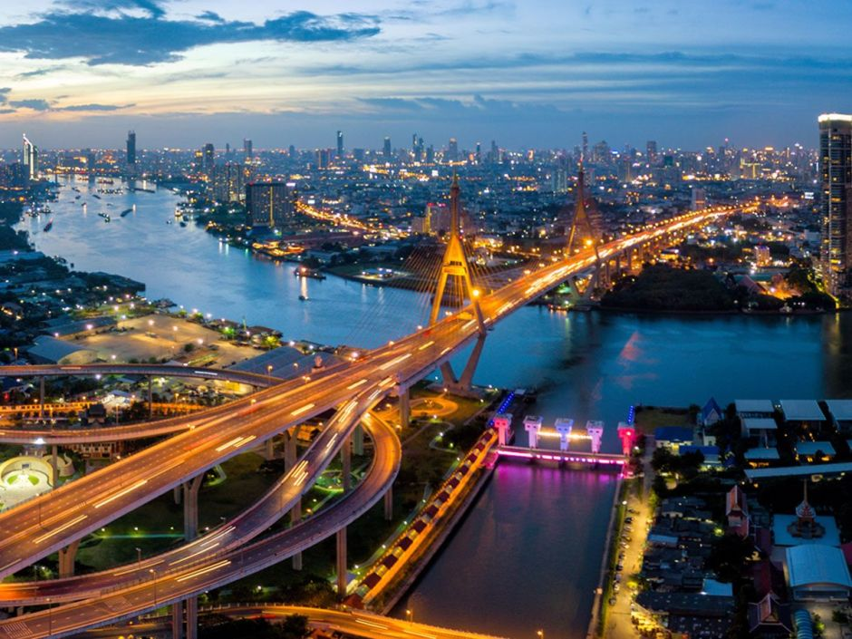

Thailand – Das Land des Lächelns
Thailand ist ein südostasiatisches Land, das für seine reiche Kultur, exotische Natur und freundliche Bevölkerung bekannt ist. Das Land bietet eine unglaubliche Vielfalt: Von traumhaften Sandstränden über dichte Dschungellandschaften bis hin zu lebendigen Städten wie Bangkok oder Chiang Mai.
Ein Besuch in Thailand bedeutet farbenfrohe Märkte, duftende Garküchen, prachtvolle Tempel und entspannte Inselatmosphäre. Der Buddhismus spielt im Alltag eine große Rolle, was sich in der Architektur und im Lebensstil widerspiegelt.
Auf dieser Website bekommst du einen Überblick über:
- Beeindruckende Sehenswürdigkeiten – von antiken Ruinen bis zu modernen Skybars
- Typisch thailändisches Essen – Gewürze, Aromen und Street Food
- Wichtige Städte – kulturelle Zentren und beliebte Reiseziele
- Die geografische Lage – eingebettet zwischen Myanmar, Laos, Kambodscha und Malaysia
Thailand bietet für jede Art von Reisenden das Richtige:
- Abenteurer – Klettern, Tauchen, Wandern
- Kulturinteressierte – Tempel, Traditionen, Museen
- Erholungssuchende – Inseln, Wellness, Yoga-Retreats
- Feinschmecker – exotische Gerichte und frische Zutaten
Mach dich bereit für eine faszinierende Reise durch eines der spannendsten Länder Asiens!
